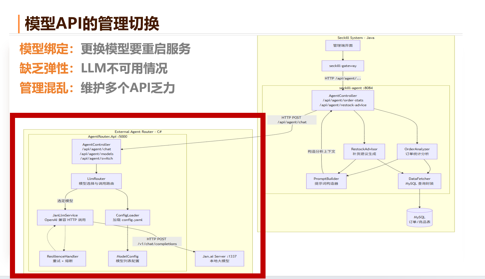
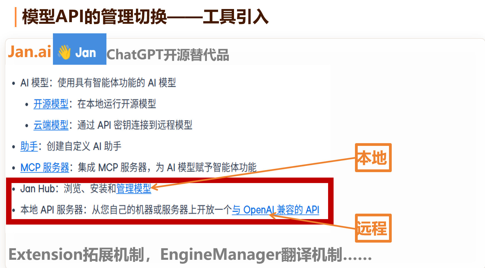
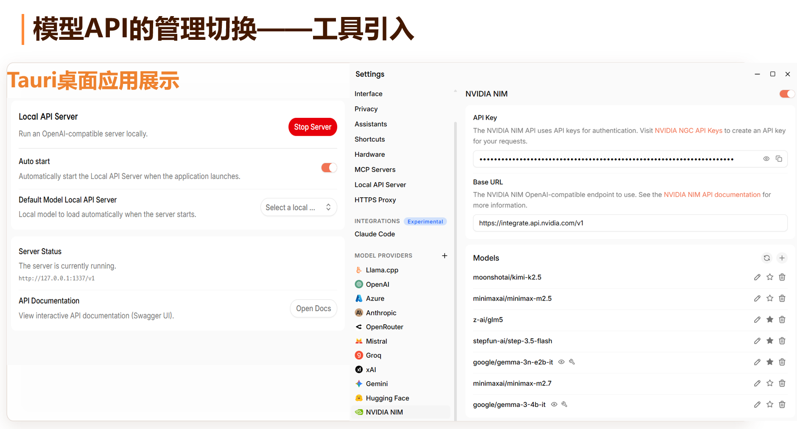
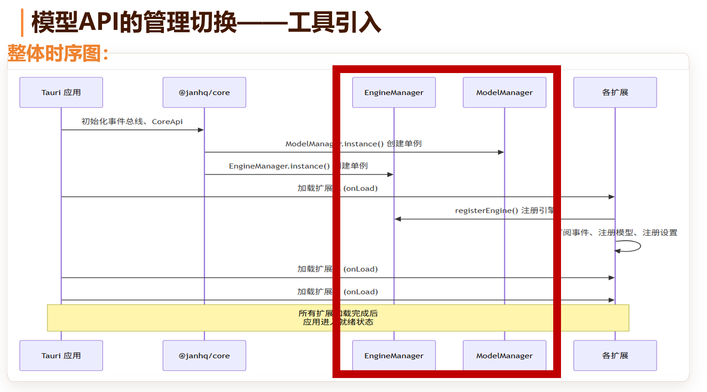
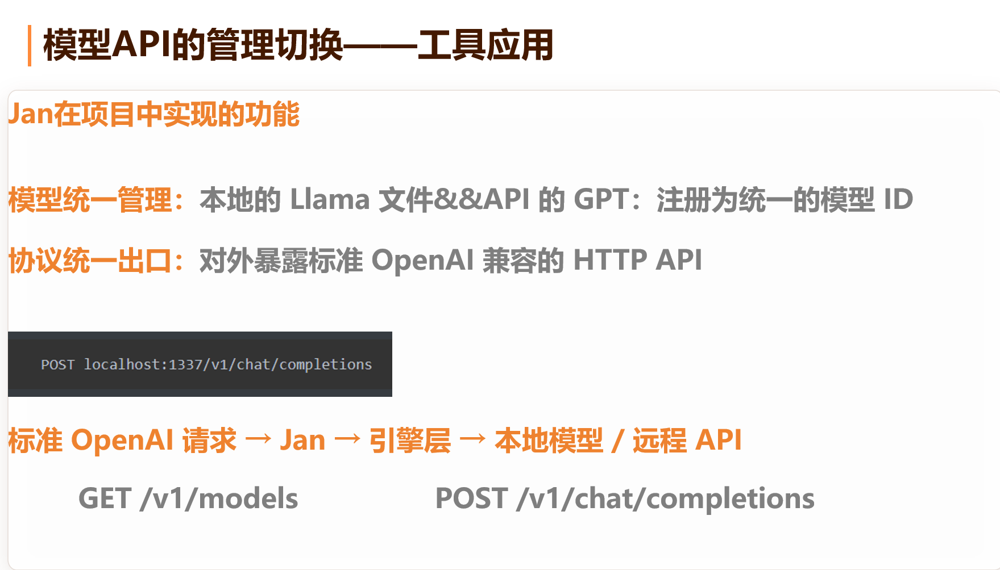
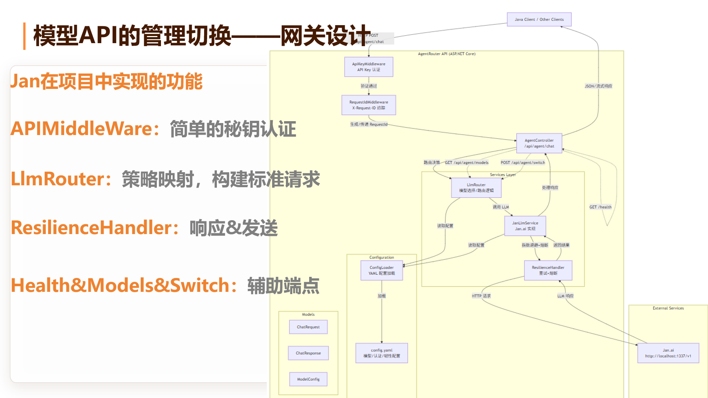
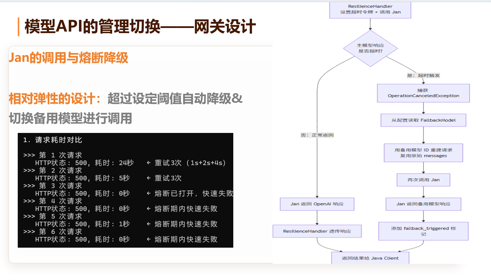
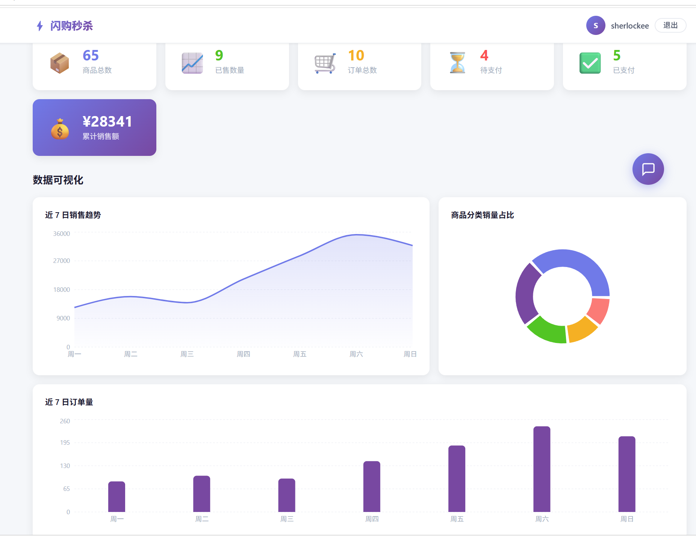

基于 Spring Cloud Alibaba 的高并发交易内核，叠加大模型驱动的智能运营 Agent，
把"自然语言指令"直接转化为对微服务的真实操作。
需求 · 微服务架构 · 技术选型
高俊
防超卖 · 异步 · 幂等 · 压测
高俊
业务 Agent（高俊）+ LLM Router（赵紫东）
压测数据 · 录屏 · 截图 · 总结
高俊
核心看点：微服务如何扛住高并发并防超卖，Agent 如何让系统"会思考、能动手"。
微服务解决"高并发安全交易"，AI Agent 解决"智能运营决策"——两层物理隔离、各自演进。
Nacos 注册发现 + OpenFeign 通信；秒杀链路 RocketMQ 异步解耦；Agent 层只读数据、与交易核心零侵入。
Java 17 · Spring Boot 3.2.5 · Spring Cloud Alibaba · MyBatis-Plus · Nacos
Redis 7 + Lua 原子脚本 · Redisson 锁/令牌桶 · RocketMQ 异步削峰
MySQL 8 · Druid · Cloud Gateway · JWT · Snowflake ID
React 18 + TypeScript · Vite · Axios · 实时库存 / 倒计时
Python FastAPI(:8099) · DeepSeek · Function Calling 工具调用
C# ASP.NET Core · Jan.ai 本地模型 · 重试 + 熔断
网关 JWT + 令牌桶限流，秒杀路径 50 QPS/IP，超限 429
Redis Lua"检查+扣减"一步完成，亚毫秒级，杜绝超卖
发 RocketMQ 后立即返回，不等数据库
Redisson 锁 + 订单唯一，双重幂等
OpenFeign 回调同步 MySQL
设计哲学：能挡的挡在外面 · 能快的全在内存 · 能异步的都异步 · 能防的多重防
难点是读与写之间的时间窗口——数据库锁为一致性而非高吞吐设计。
分布式幂等从来不是"单一银弹"，而是"多道防线"——这是我们排查到重复订单后的核心经验。
| 并发数 | 吞吐 QPS | 成功率 | 错误 | P99 时延 |
|---|---|---|---|---|
| 100 | 1,210 | 100% | 0 | 70ms |
| 300 | 1,580 | 100% | 0 | 180ms |
| 500 | 1,840 | 100% | 0 | 360ms |
| 800 | 1,760 | 100% | 0 | 620ms |
累计数万请求、并发最高 800，峰值 1,840 QPS、0 错误 0 超时。
运营人员不再点按钮、敲 SQL，而是直接对系统说一句话：
大模型理解意图 → 自动选择工具 → 调用真实微服务接口 → 操作 Redis / MySQL → 用人话回报。
这就是"微服务 + Agent"的真正价值。
前端 AI 助手发自然语言到 Python Agent（:8099）
DeepSeek 通过 Function Calling 判断意图、选工具与参数
工具用 HTTP 调 admin-agent 的 REST 接口（带 Token）
admin-agent 操作 Redis / MySQL，返回结构化结果
LLM 把结果整理成自然语言回传
Agent = 大模型(决策) + 工具(行动)；微服务的 REST 接口就是 Agent 的"手脚"。Agent 不碰交易核心，只经标准接口编排。
关注点分离：LLM 负责"听懂与决策"，admin-agent 负责"安全执行"，交易核心完全不受影响。

模型绑定 换模型要重启服务 ｜ 缺乏弹性 LLM 不可用无兜底 ｜ 管理混乱 多 API 难维护 —— 用独立的 C# LLM Router 统一接入与切换

Jan.ai 是开源的 ChatGPT 替代品：本地开源模型与云端 API 模型一处管理，并对外提供 OpenAI 兼容接口

开启本地 API Server，可在 Llama.cpp / OpenAI / Gemini / NVIDIA NIM … 多家供应商间随时切换，一处配置、即开即用

应用启动后以单例方式加载各扩展，注册引擎与模型；全部就绪后才进入对外服务状态

本地 Llama 与远程 GPT 注册为统一模型 ID；标准 OpenAI 请求经 Jan 路由到本地模型 / 远程 API —— 业务侧只面对一个出口

APIMiddleware 密钥认证 → LlmRouter 策略映射构建标准请求 → ResilienceHandler 响应与转发 → Health / Models / Switch 辅助端点

相对弹性设计：超过阈值自动降级、切换备用模型；重试 + 熔断让瞬时抖动一次重试即恢复，后端过载时快速失败、故障不蔓延

点击任一视频即可放大播放；按 Esc 或点击空白处 / 右上角 × 关闭。
Nacos 注册发现 + OpenFeign 声明式调用，服务解耦自治
goods 服务用 Redis Lua 原子脚本，秒杀零超卖
RocketMQ 在 goods / order 间异步削峰，最终一致
LLM Function Calling 调度微服务 REST 接口完成运营动作
微服务把复杂系统拆成可独立演进的服务，Agent 再以标准接口把它们智能地编排起来——这正是本项目的核心设计思想。
整体架构 · 网关鉴权与限流 · 业务 Agent · 集成与压测
C# LLM Router（模型路由/切换/熔断）· Agent 原理
商品/订单服务 · RocketMQ 消费 · Redisson 分布式锁
React 前端 · admin-agent 数据代理 · 数据可视化
四人协作，覆盖网关 → 交易内核 → 异步 → Agent → 前端完整链路。
工业级微服务方案守住高并发交易的"稳"（实测峰值 1800+ QPS、0 错误 0 超卖），
大模型 Agent 把运营从"人工 SQL"升级为"一句话搞定"的"智"。
两层标准接口协作、互不侵入，为后续叠加更多智能能力留足空间。